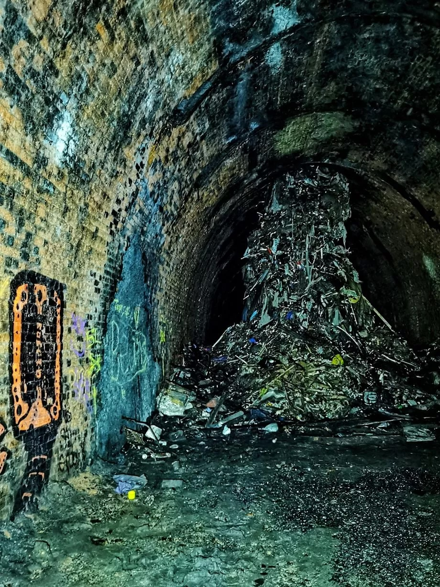

The Goat that Makes You Old - Lost?
A beautiful piece of art, gone forever?
 Last week, Brother Harvest announced to the world that his favourite piece of art, the Goat That Makes You Old, that stood proudly in the entrance hall of his palace - and, previously, Vexilia's - has gone missing.
This is upsetting - especially since the goat's blood is the only thing keeping his garden in as pristine a condition as it is.
Keep an eye out in the coming days. If you find any information relating to the goat, don't worry. Brother Harvest will find you.
Last week, Brother Harvest announced to the world that his favourite piece of art, the Goat That Makes You Old, that stood proudly in the entrance hall of his palace - and, previously, Vexilia's - has gone missing.
This is upsetting - especially since the goat's blood is the only thing keeping his garden in as pristine a condition as it is.
Keep an eye out in the coming days. If you find any information relating to the goat, don't worry. Brother Harvest will find you.
Angel of Death Sighting in Derelictus
Who are they?
Earlier this week, there was another sighting of the figure that locals have taken to calling "The Angel of Death". This figure, likely either aelfir or drow, is identifiable by their black cloak. Patterns to their appearance have not been identified, but when they make an appearance, a high-profile individual, usually aelfir, is found dead the next day. Interestingly, multiple times, the victim has been in a locked room, with no windows or entry points, and were found dead in their room the next morning with no visible entry points. If you have any evidence towards this, please contact us - send a letter by corvid to Silver Quarterly, Silver Quarter.
The Vermissian - An Autopsy
And... What is the Vault?
A hundred years ago, in an act of unprecedented genius, the aelfir Council decided to build a train network, spanning the entire Spire, using prokatakos technology. In the years that followed, the Council fought through decades of lobbying from existing railway barons, useless drow workers, and entirely too ambitious human retroengineers, to finally create a working system. The Vermissian, as it is called, was carved into the flesh of Spire itself. Stations were built, trains were assembled, and in the end, it became the go-to destination for travel throughout Spire. Luxury options are available, and even budget or economy trains for the poorer amongst us! Anyone can ride the Vermissian. There are rumours, like there are everywhere, that there is a "vault" hidden under the Vermissian. Supposedly, The Vault is supposedly a collection of knowledge from the Drow homelands. According to legend, only the most dedicated of drow knowledgekeepers are allowed access - and even then, only the smallest of their numbers are able to access the real archives of knowledge buried there. The Vault is subject to a mountain of theories - despite being lesser known than the Vermissian itself - and, of course, nobody who knows of it will ever speak on this, so in the end, all we have is theories. Some say that the archives of the Drow homeland, kept safe from Aelfir "oppression", and yet others seem to believe that The Vault itself is a work of fiction, written by the aelfir to make the drow seem more conniving. That, of course, is untrue. Whatever the reality may be, we will likely never learn the truth. Maybe that's for the better. Maybe the knowledge buried in there would break our minds if discovered, and maybe it would be best if we simply stop looking for it. And, as always, thanks for reading.